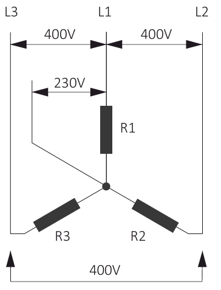

Centrales Generadoras y Alternadores
| Concepto | Descripción |
|---|---|
| Definición | Instalaciones industriales cuyo objetivo es la producción de energía eléctrica (energía secundaria) a partir de una fuente de energía primaria. |
| Clasificación |
Energías Renovables
Fuentes de energía limpias e inagotables: Energía eólica (viento)
Energía solar (radiación solar)
Energía hidráulica
Energías No Renovables
Fuentes de energía limitadas y agotables que generan emisiones y residuos: Carbón
Gas natural
Petróleo
Energía nuclear
|
| Concepto | Descripción |
|---|---|
| Definición | Máquina capaz de transformar energía mecánica en energía eléctrica, generando una corriente alterna mediante inducción electromagnética. |
| Principio de Funcionamiento |
Se basa en la Ley de Faraday: sobre un conductor sometido a un campo magnético variable se induce una fuerza electromotriz. En las centrales, no es la bobina la que gira entre los polos del imán, sino que es el imán el que gira a velocidad angular constante entre las bobinas, impulsado por la energía mecánica obtenida en los distintos procesos. |
| Partes Principales |
Rotor
Parte móvil encargada de generar electricidad y distribuirla. En las centrales, generalmente corresponde al imán que gira.
Estator
Parte fija del alternador donde están alojadas las bobinas que generan la corriente eléctrica.
Turbina
Elemento que impulsa el movimiento del rotor (imán) dentro de las bobinas para generar la interacción electromagnética. |
| Concepto | Descripción |
|---|---|
| Definición |
Sistema formado por tres corrientes alternas monofásicas de la misma frecuencia y valores eficaces, desfasadas entre sí 120°. Es el sistema más eficiente para transportar energía eléctrica a lo largo de la red de transporte y distribución. |
| Generación |
En los alternadores se colocan 3 bobinas desfasadas 120° e influenciadas por el campo magnético de un imán giratorio central. Esto produce en cada bobina una f.e.m. alterna de igual frecuencia e igual valor eficaz pero desfasadas 120° entre sí. Fase L1
Fase L2
Fase L3
|
| Conexiones |
Conexión en EstrellaLos principios de cada bobina se unen en un punto común (neutro) y los extremos se conectan a las líneas L1, L2, L3.

Tensión: 230V fase-neutro / 400V entre fases Conexión en TriánguloEl final de cada bobina se conecta al principio de la siguiente, formando un triángulo cerrado. 
Tensión: 400V entre fases |